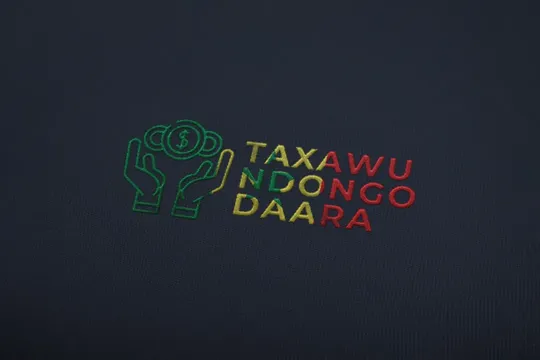

Logo Taxawu Ndongo Daara

Taxawu Ndongo Daara est bien plus qu'un logo, c'est un cri du cœur et un appel à l'action collective. Conçu pour une campagne de collecte de fonds destinée à venir en aide aux enfants de la rue et des dahras (écoles coraniques traditionnelles) au Sénégal, ce logo et son affiche associée portent un message social puissant.
Signification du nom (en wolof)
- Taxawu : "Aidons" / "Apportons notre soutien
- Ndongo : "Enfant"
- Daara : École coranique traditionnelle / Talibé
Le nom complet signifie donc : "Aidons les enfants des daaras" - un appel direct à la solidarité communautaire.
Le logo présente trois éléments visuels clés fusionnés en un symbole cohérent :
1. Les mains tendues tenant des pièces : Symbolisent :
- Le don, la charité (sadaqa en islam)
- La solidarité communautaire
- L'action concrète (pas seulement des paroles)
- La générosité collective
2. Le typographie colorée : Les lettres de "TAXAWU NDONGO DAARA" sont réparties en trois couleurs qui rappellent le drapeau sénégalais :
- Vert (#1E7A3E) : Nature, espoir, islam, croissance
- Jaune/Or (#F9BD29) : Richesse, générosité, solidarité
- Rouge (#CE1126) : Courage, sacrifice, amour
Cette palette patriotique ancre la cause dans l'identité nationale sénégalaise.
3. Le style graphique simple et direct : Lignes épurées, formes géométriques reconnaissables, sans fioritures. Le message doit être compris par tous, quelle que soit leur éducation. C'est un logo pour le peuple, pas pour l'élite.
L'affiche de sensibilisation
L'affiche rouge qui accompagne le logo est un chef-d'œuvre de communication sociale :
Composition émotionnelle :
- Photo centrale : Deux jeunes talibés en noir et blanc (dignité malgré la pauvreté)
- Cercles concentriques : Créent un effet de cible ou d'onde, suggérant que l'impact d'un don se propage
- Icônes blanches : Prière, entraide, éducation – les piliers de l'intervention
- Silhouettes humaines : Communauté qui se mobilise
Hiérarchie du message :
- Titre principal : "COLLECTE DE FONDS POUR VENIR EN AIDE AUX ENFANTS DE LA RUE"
- Sous-titre : "Un simple geste peut faire toute la différence"
- Paragraphe explicatif : Contextualise la situation et définit la vraie compassion
- Call-to-action : Coordonnées et moyens de contribution
- Icônes de types d'aide : Vêtements, nourriture, fournitures scolaires, livres
Moyens de contribution :
- WAVE (mobile money)
- Orange Money
- Numéro de contact : +221 77 938 43 34
Les icônes d'aide acceptée (en bas) :
- üëï V√™tements
- üçΩÔ∏è Nourriture
- üì¶ Fournitures
- üìö Livres/Mat√©riel √©ducatif
Message philosophique profond
Le texte de l'affiche est crucial : "Nous sommes témoin de la situation qu'endure les enfants dans les rues ou dans les dahras. Nous vous demandons une simple geste car la véritable compassion ne se limite pas à jeter une pièce à un mendiant ; elle consiste à voir qu'un édifice qui produit des mendiants a besoin d'être restructuré."
Ce n'est pas de la charité paternaliste, c'est un appel à la transformation systémique. Le logo et l'affiche ne demandent pas juste de l'argent, ils demandent un changement de regard et d'approche.
Impact social
Taxawu Ndongo Daara s'attaque à un problème social majeur au Sénégal : les milliers d'enfants talibés contraints à mendier dans les rues par certains marabouts sans scrupules. Cette campagne propose une aide concrète tout en questionnant les structures qui perpétuent le problème.
© 2025 by Frenzy Design